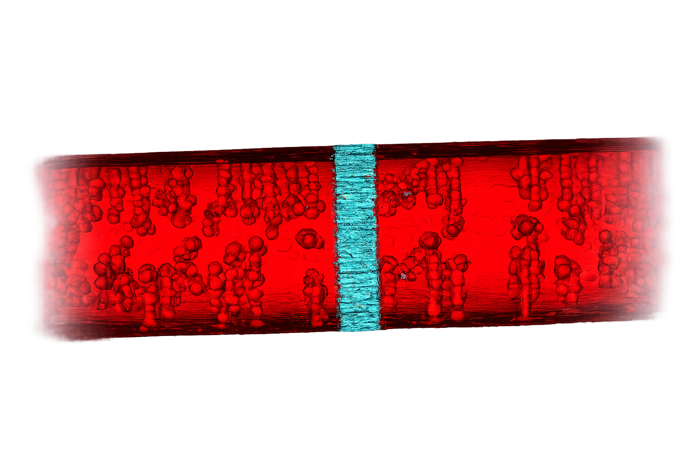
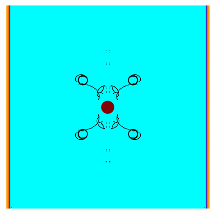
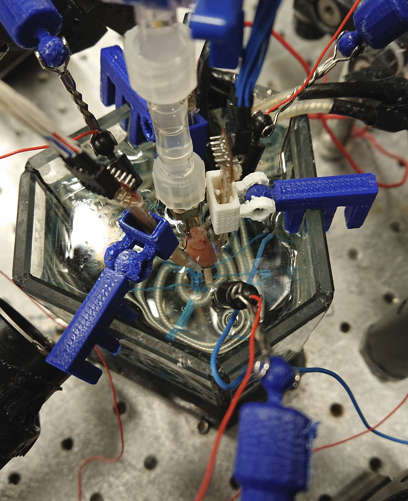
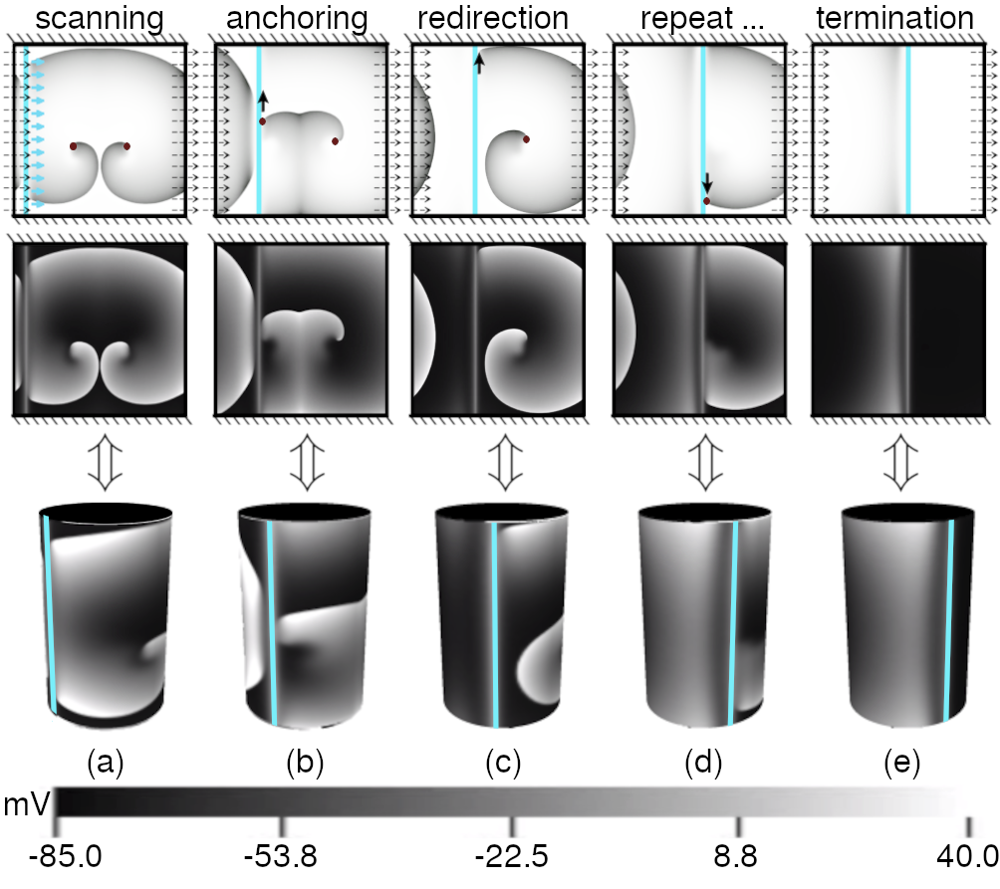
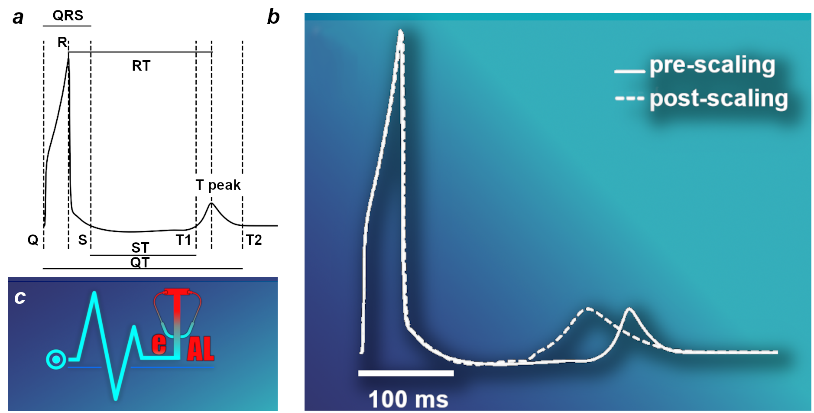

Cardiac modeling
I develop and use biophysically detailed computational models of cardiomyocytes and cardiac tissue to investigate the interplay between ion channel function, cellular electrophysiology, and tissue to organ-level conduction. These models provide a framework for linking molecular and cellular mechanisms to emergent electrical behavior in the heart. My work has contributed to the development of mathematical models of neonatal rat and adult pig atrial cardiomyocytes, with the broader goal of improving mechanistic understanding of normal and pathological cardiac excitation.
A recent direction of my research focuses on incorporating cardiac ultrastructure into computational models of electrical activity in the heart in a cost-effective manner. In collaboration with the MICROCARD consortium, we aim to bridge the gap between cellular microstructure and tissue-scale electrophysiology by integrating detailed information about subcellular organization, including the spatial arrangement of ion channels, membranes, and intracellular compartments. By combining high-resolution structural data with computational modeling, this work seeks to understand how ultrastructural heterogeneity influences electrical propagation, excitability, and arrhythmia mechanisms. Ultimately, these models will provide a more realistic representation of cardiac function across scales and help uncover how microscopic structural changes can shape macroscopic cardiac dynamics.

Nonlinear dynamics of arrhythmias
A central theme of my research is the nonlinear dynamics of excitation waves in cardiac tissue. I study how spiral and scroll waves emerge, drift, destabilize, and interact to generate complex arrhythmic patterns. This work draws on concepts from nonlinear physics and excitable media to understand the dynamical foundations of cardiac rhythm disorders. By combining theory and simulation, this research aims to identify the principles governing wave propagation, turbulence, and self-organization in the heart, and to connect these phenomena to clinically relevant arrhythmia mechanisms. A key goal of this work is to understand the dynamical mechanisms underlying arrhythmias in order to develop strategies for controlling spiral waves in real time, even without prior knowledge of the location of the rotors driving the arrhythmia within the heart.


Low-energy control
I am interested in optical and low-energy strategies for controlling cardiac excitation. My work explores how light can be used to probe, steer, and terminate complex wave patterns in cardiac systems with high spatiotemporal precision. In addition to optogenetics, I study other light-based approaches such as photopharmacology, in which light-activated compounds enable targeted and reversible modulation of ion channels and cellular activity, opening new possibilities for spatially precise drug delivery in cardiac tissue.
Complementing these optical approaches, I also investigate low-energy strategies for arrhythmia control. One example is resonant-frequency anti-tachycardia pacing, where carefully timed electrical stimulation interacts with the natural dynamics of excitation waves to destabilize and eliminate spiral waves that sustain arrhythmias. By exploiting the intrinsic dynamical properties of cardiac tissue, these approaches aim to terminate arrhythmias using significantly lower energy than conventional defibrillation, potentially enabling safer and more physiologically informed therapies.


MeTAL: Multiscale modeling for arrhythmia risk prediction
In a recent line of work, we developed MeTAL (Multiscale-enriched Transformation and Analysis for Long-QT), a computational framework designed to bridge ion-channel biophysics and patient-level electrophysiological phenotypes. MeTAL integrates a detailed mathematical formulation of the hERG potassium channel into a multiscale model of human ventricular electrophysiology, enabling the generation of physiologically grounded pseudo-ECGs and quantitative prediction of QT-interval dynamics. By incorporating multiparametric electrophysiological measurements of KCNH2 variants-including changes in channel kinetics, voltage dependence, and conductance—the framework links experimental ion-channel data directly to clinically relevant biomarkers of arrhythmia risk. This approach provides a mechanistic platform to interpret the functional impact of genetic variants and to predict how subtle alterations in ion-channel gating can propagate across biological scales to shape cardiac electrical behavior and arrhythmogenic risk.

Check out our latest publications >>
SPARC: a structural pathogenicity algorithm for risk classification of hERG variants.
Chatelain F.C., de Oliveira B.R., Grataloup G., Robert N., Alameh M., Thollet A.,
Montnach J., Feliciangeli S., Rio A., Bibault F., Bichet D., Bignucolo O.,
Extramiana F., Majumder R., Schott J.J., Probst V., Denjoy I., Lesage F.,
Loussouarn G., De Waard M. (2026).
Europace, 28(2): euaf327.
Termination of figure-of-eight reentry via resonant feedback pacing
Roshan N, Majumder R. (Nov 19; 2025).
Frontiers in Network Physiology, 5, 1692372.
Photon-Scanning Approach to Control Spiral Wave Dynamics in the Heart.
Diaz-Maue L., Zykov V.S., Majumder R. (2024).
Physical Review Letters, 133, 218401.
In silico thermal control of spiral wave dynamics in excitable cardiac tissue.
Majumder R. (2024).
Biophysical Reports, 4(3).